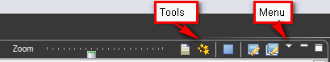

Views
Views show different aspects of the image catalog or of single images and image groups.
Views have their own menus. To open the menu for
a view, click the triangle icon on the view's title bar. Some views also
have their own tool buttons on the title bar. The actions represented by these buttons
only affect the items within that view.

A view might appear by itself, or stacked with other
views in a tabbed notebook. You can change the layout of a perspective by
opening and closing views and by docking them in different positions in the
Workbench window.
Opening views
Perspectives offer pre-defined combinations of views. To open a
view that is not included in the current perspective, select Window>Show
View from the main menu bar.Moving and docking views
To change the location of a view in the current perspective:
- Drag the view by its title bar. Do not release the left mouse button yet.
- As you move the view around the Workbench, the mouse pointer changes indicating the effect of the move operation.To see the
drop cursor change, drag the view over the left, right, top, or bottom border of
another view. You may also drag the view outside of the
Workbench area to turn it into a "Detached" view that sits on the desktop.
- When the view is in the location that you want, release the left mouse button.
- Note that a group of stacked views can be dragged using the empty space to
the right of the view tabs.
Working with multiple windows
You
may also drag a view to a location outside the workbench. A separate
application window containing the view will be created on the desktop.
To return to the old layout, simply drag the view back to its original
location.
Creating fast views
Fast views are hidden views that can be quickly opened and closed. They work
like other views except they do not take up space in your Workbench window.
To create a fast view perform a right click on the view tab and check the option Fast View.
The icon of a fast view appears on the Fast
View bar (bottom left in the status bar). You
can show the view by clicking its icon. As soon as you
click somewhere else outside the view, the fast view is hidden again.
To restore the view to its original location (and remove it from the Fast
View bar), toggle the fast view item in the view button's context menu.
Maximizing and minimizing views
View Stacks (each containing one
or more views) can be maximized or minimized.
There is a variety of ways to access
these operations:
- Double click a view tab to maximize its stack. Another double click will restore its original size and position.
- Use the Minimize and Maximize buttons provided at the right hand side of the stacks title bar.
- Selecting the Minimize or Maximize item on the context (right-click)
menu for a stack
When a view stack is minimized it appears as a Trim stack, a collection of icons representing the minimized views. This Trim stacks are located in the margins of the workbench next to the original position of the stack. With a click on the Restore button of the Trim stack you may restore the view stack to its original size and position.
Note: You can always return to the intial layout of the current perspective by selecting the Window>Reset Perspective menu function.
Save your changes
After adding or rearranging views in the current perspective, you may wish to save your new
layout by clicking  Window > Save
Perspective As....
Window > Save
Perspective As....